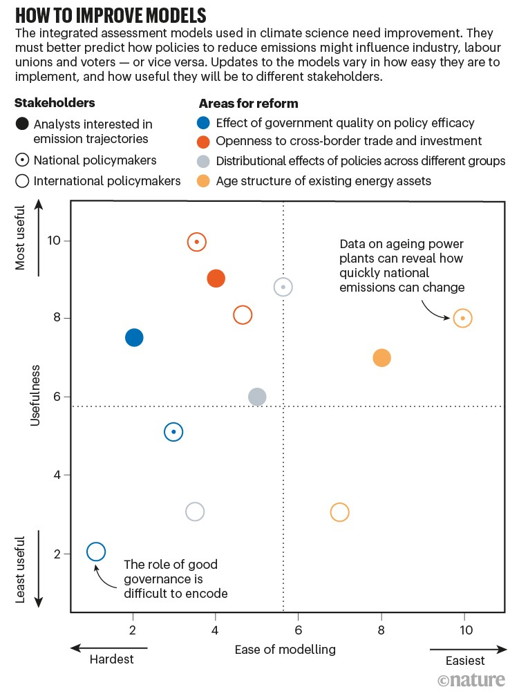
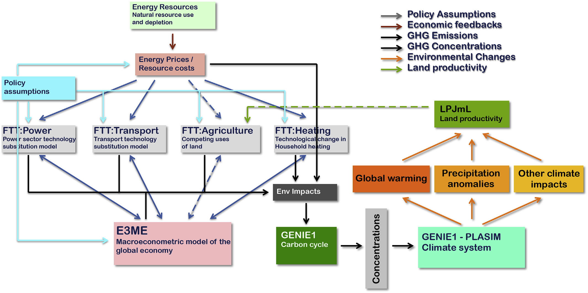

2 Climate Models
Overview text on selected Climate Models
2.2 Mental Picture of Greenhouse Effect
Benestad
The popular picture of the greenhouse effect emphasises the radiation transfer but fails to explain the observed climate change.
The earth’s climate is constrained by well-known and elementary physical princi- ples, such as energy balance, flow, and conservation. Green- house gases affect the atmospheric optical depth for infrared radiation, and increased opacity implies higher altitude from which earth’s equivalent bulk heat loss takes place. Such an increase is seen in the reanalyses, and the outgoing long- wave radiation has become more diffuse over time, consistent with an increased influence of greenhouse gases on the vertical energy flow from the surface to the top of the atmosphere. The reanalyses further imply increases in the overturning in the troposphere, consistent with a constant and continuous vertical energy flow. The increased overturning can explain a slowdown in the global warming, and the association between these aspects can be interpreted as an entanglement between the greenhouse effect and the hydrological cycle, where reduced energy transfer associated with increased opacity is compensated by tropospheric overturning activity.
William Kininmonth’s ‘rethink’ on the greenhouse effect for The Global Warming Policy Foundation. He made some rather strange claims, such as that the Intergovernmental Panel on Climate Change (IPCC) allegedly should have forgotten that the earth is a sphere because “most absorption of solar radiation takes place over the tropics, while there is excess emission of longwave radiation to space over higher latitudes”.
Kininmonth’s calculations are based on wrong assumptions. When looking at the effect of changes in greenhouse gases, one must look at how their forcing corresponds to the energy balance at the top of the atmosphere. But Kininmonth instead looks at the energy balance at the surface where a lot of other things also happen, and where both tangible and latent energy flows are present and make everything more complicated.
It is easier to deal with the balance at the top of the atmosphere or use a simplified description that includes convection and radiation.
Another weak point is Kininmonth’s assumption of the water vapour being constant and at same concentrations as in the tropics over the whole globe. Focusing on the tropics easily gives too high values for water vapour if applied to the whole planet.
Another surprising claim that Kininmonth made was that ocean currents are the only plausible explanation for the warming of the tropical reservoir, because he somehow thinks that there has been a reduction in the transport of heat to higher latitudes due to a mysterious slow down of ocean currents. It is easy to check trends in sea surface temperatures and look for signs that heat transport towards higher latitudes has weakened. Such a hypothetical slowdown would suggest weaker ocean surface warming in the high latitudes, which is not supported by data.
Benestad (2022) New misguided interpretations of the greenhouse effect from William Kininmonth
Is it possible to provide a simple description that is physically meaningful and more sophisticated than the ‘blanket around earth’ concept?
The starting point was to look at the bulk – the average – heat radiation and the total energy flow. I searched the publications back in time, and found a paper on the greenhouse effect from 1931 by the American physicist Edward Olson Hulburt (1890-1982) that provided a nice description. The greenhouse effect involves more than just radiation. Convection also plays a crucial role.
How does the understanding from 1931 stand up in the modern times? I evaluated the old model with modern state-of-the-art data: reanalyses and satellite observations.
With an increased greenhouse effect, the optical depth increases. Hence, one would expect that earth’s heat loss (also known as the outgoing longwave radiation, OLR) becomes more diffuse and less similar to the temperature pattern at the surface.
An analysis of spatial correlation between heat radiation estimated for the surface temperatures and that at the top of the atmosphere suggests that the OLR has become more diffuse over time.
The depth in the atmosphere from which the earth’s heat loss to space takes place is often referred to as the emission height. For simplicity, we can assume that the emission height is where the temperature is 254K in order for the associated black body radiation to match the incoming flow of energy from the sun.
Additionally, as the infrared light which makes up the OLR is subject to more absorption with higher concentrations of greenhouse gases (Beer-Lambert’s law), the mean emission height for the OLR escaping out to space must increase as the atmosphere gets more opaque.
There has been an upward trend in the simple proxy for the emission height in the reanalyses. This trend seems to be consistent with the surface warming with the observed lapse rate (approximately -5K/km on a global scale). One caveat is, however, that trends in reanalyses may be misleading due to introduction of new observational instruments over time (Thorne & Vose, 2010).
Finally, the energy flow from the surface to the emission height must be the same as the total OLR emitted back to space, and if increased absorption inhibits the radiative flow between earth’s surface and the emission height, then it must be compensated by other means.
The energy flow is like the water in a river: it cannot just appear or disappear; it flows from place to place. In this case, the vertical energy flow is influenced by deep convection, which also plays a role in maintaining the lapse rate.
Benestad (2016) What is the best description of the greenhouse effect?
2.3 Political IAMs
Peng Memo
Similar to many economic tools developed decades ago, IAMs are built on an oversimplified logic: that people are rational optimizers of scarce resources. ‘Agents’ make decisions that maximize the benefits to a country or society2. Price adjustments — for example, a carbon tax — or constraints on polluting technologies alter the agents’ incentives, yielding changes in behaviour that alter economies and emissions4.
In reality, human choice is a darker brew of misperception and missed opportunity, constrained by others’ decisions. Researchers in sociology, psychology and organizational behaviour have long studied human behaviours. They explore why people stick with old, familiar technologies even when new ones are much superior, for example. This kind of research can also explain why the passion of mass movements, such as the global climate-strike movement, Fridays for Future, is hard to understand based on just individual costs and benefits, yet it can have powerful effects on policy.
To get IAMs to reflect social realities and possibilities, one should look to the field of political economy. Eight political economy insights
Data improve models’ relevance to policy and investment choices.
• Access to capital can be constrained by risk-averse investors who fear unpredictable changes in policy, hampering low-carbon energy transitions.
• The design and type of a policy instrument, such as whether to subsidize green technologies or tax polluting industries, can be influenced by which interest groups are mobilized.
• Carbon lock-in and stranding of fossil-based energy assets might limit the degree to which emissions can deviate from their previous trajectory, without interventions that can weaken the power of incumbent polluters.
• Unequal costs and benefits of climate policies accrue to different economic, racial and religious groups, which can affect policies’ moral and political acceptability.
• Public opinion might facilitate stronger action to tackle climate change.
• Confidence in political institutions or lack of it can influence the public’s willingness to support actions that reduce emissions.
• Trade and investment policies can expand the markets for new green technology, leading to lower costs and more political support.
• Competence of government influences a state’s ability to intervene in markets, make choices and alter the cost of deploying capital.

Peng (2021) Climate policy models need to get real about people — here’s how
2.4 CAP6
Carbon Asset Procing Model -AR6
Bauer/Proistosecu/Wagner Abstract
Valuing the cost of carbon dioxide (CO 2 ) emissions is vital in weighing viable approaches to climate policy. Conventional approaches to pricing CO 2 evaluate trade-offs between sacrificing consumption now to abate CO 2 emissions versus growing the economy, therefore enlarging one’s financial resources to pay for climate damages later, all within a standard Ramsey growth frame- work. However, these approaches fail to comprehensively incorporate decision making under risk and uncertainty in their analysis, a limitation especially relevant considering the tail risks of climate impacts. Here, we take a financial-economic approach to carbon pricing by developing the Carbon Asset Pricing model – AR6 (CAP6), which prices CO 2 emissions as an asset with negative returns and allows for an explicit representation of risk in its model structure. CAP6’s emissions projec- tions, climate damage functions, climate emulator, and mitigation cost function are in line with the sixth assessment report (AR6) from the Intergovernmental Panel on Climate Change (IPCC). The economic parameters (such as the discount rate) are calibrated to reflect recent empirical work. We find that in our main specification, CAP6 provides support for a high carbon price in the near-term that declines over time, with a resulting ‘optimal’ expected warming below the 1.5 ◦ C target set forth in the Paris agreement. We find that, even if the cost of mitigating CO 2 emissions is much higher than what is estimated by the IPCC, CAP6 still provides support for a high carbon price, and the resulting ‘optimal’ warming stays below 2 ◦ C (albeit warming does exceed 1.5 ◦ C by 2100). Incorporating learning by doing further lowers expected warming while making ‘optimal’ policy more cost effective. By decomposing sources of climate damages, we find that risk associated with slowed economic growth has an outsized influence on climate risk assessment in comparison to static-in-time estimates of climate damages. In a sensitivity analysis, we sample a range of discount rates and technological growth rates, and disentangle the role of each of these assumptions in determining central estimates of CAP6 output as well as its uncertainty over time. We find that central estimates of carbon prices are sensitive to assumptions around emissions projections, whereas estimates of warming, CO 2 concentrations, and economic damages are largely robust to such assumptions. We decompose the uncertainty in CO 2 prices, temperature rise, atmospheric CO 2 levels, and economic damages over time, finding that individual preferences control price uncertainty in the near term, while rates of technological change drive price uncertainty in the distant future. The influence of individual preferences on temperature rise, CO 2 concentrations, and economic damages is realized for longer than in the case of CO 2 prices owing to the consequences of early inaction. Taken in totality, our work highlights the necessity of early and stringent action to mitigate CO 2 emissions in addressing the dangers posed by climate change.
Bauer/Proistosecu/Wagner Memo
Conventional IAMs (such as the dynamic integrated climate-economy, or DICE evaluate climate change impacts within the context of a standard Ramsey growth economy. In this approach, one considers tradeoffs between emitting CO 2 and incurring damages both now and, largely, in the future, versus abating CO 2 emissions now for some cost. The resulting benefit-cost analysis results in a presently-low (∼ $40 in the case of DICE– 2016R) and rising ‘optimal’ price over time, with significant warming (∼ 4 ◦ C) by 2100. It is notable that DICE’s suggested ‘optimal’ warming projections are larger than the warming target of 1.5 ◦ C established in the Paris Agreement.
A limitation of Ramsey growth IAMs is that they lack a comprehensive description of decision-making under uncertainty, a feature of many financial economics models. This is important, as climate change projections are inherently probabilistic, with low probability, extreme impact outcomes presenting the most significant risk to the climate-economic system (i.e., a potentially high climate response to emissions leading to rapid warming). Additionally, many complex risks associated with climate change cannot currently be fully quantified and are therefore excluded from economic analyses, despite impacting the overall risk landscape of climate impacts. An example of this are climate tipping points, which have been argued to lead to rapid environmental degradation [61, 5] and increase the SCC [20]. These “deep” uncertainties in the impacts of climate change have led some to advocate for an “insurance” to be taken out against high climate damages. Ramsey growth models do not allow for such considerations in determining their policy projections. Put differently: Ramsey growth IAMs do not allow individuals to ‘hedge’ against climate catastrophe.
Recently, financial asset pricing models have been introduced in an effort to understand how risk im- pacts climate policy decision making [18, 19, 10]. Such models take a fundamentally different approach than conventional, Ramsey growth IAMs. Instead of computing the “shadow price” of CO 2 (which is to say, the price of CO 2 implied from distortions in consumption and economic utility owing to climate damages), financial asset pricing models compute the price of CO 2 directly, treating CO 2 as an asset with negative returns. The result is not the SCC of yore, but rather, a direct ‘optimal’ price for each ton of CO 2 emitted.
Here, we introduce the Carbon Asset Pricing model – AR6 (abbreviated to CAP6 herein), a climate- economy IAM that builds on previous financial asset pricing climate-economy models. CAP6 embeds a representative agent in a binomial, path dependent tree that models decision making under uncertainty. Prior to optimization, a number of potential trees are generated via sampling climate and climate impacts uncertainty that the agent traverses depending on emissions abatement choices. The present-day Epstein-Zin (EZ) utility of consumption is optimized to determine the ‘optimal’ emissions abatement policy. EZ utility allows for the separation of risk aversion across states of time and states of nature, a distinction theorized to play a significant role in climate policy.
The climate component of the model utilizes an effective transient climate response to emis- sions (TCRE) to map cumulative emissions to global mean surface temperature (GMST) anomaly, and a simple carbon cycle model to map CO 2 emissions to concentrations. We sample with equal probability three damage functions of different shape and scale, thus capturing both parametric and epistemic uncertainty in the damage function in our risk assessment. Finally, we formulate a new marginal abatement cost curve (MACC), providing a much-needed update to the McKinsey MACC.
We find that the ‘optimal’ expected warming in the preferred calibration is in line with the 1.5 ◦ C of warming by 2100 target set forth in the Paris agreement. Furthermore, we find that even if we are pessimistic about the cost estimates provided by the IPCC, the preferred calibration of CAP6 still supports limiting warming to less than 2 ◦ C warming by 2100. We demonstrate the role of learning by doing by allowing for endogenous technological growth, and find that this decreases the overall costs of ‘optimal’ policy and lowers expected warming. We show that risk associated with slowing economic growth has an outsized influence on price path dynamics in comparison to static-in-time estimates of climate damages, and argue this is a general feature of CAP6 ‘optimal’ price paths.
Bauer (2023) Carbon Dioxide as a Risky Asset (SSRN)
Review of Bauer
Nuccitelli
For decades, economists believed immediate action to fight climate change would decimate the economy, but a new study adds to a growing body of research showing that the economic benefits of climate action outweigh the costs.
The paper’s climate-economics model incorporates up-to-date estimates from the 2022 Sixth Intergovernmental Panel on Climate Change, or IPCC, report on climate-warming pollution, climate responses, resulting damages, and the costs of reducing those emissions. Its core conclusions are largely determined by three factors: the benefits of “learning by doing,” the steep economic costs of catastrophic climate change, and a more realistic “discount rate.” Accounting for these factors reveals that any possible savings from current inaction would not generate enough funds over time to fix potential damage from climate catastrophe.
2.6 DICE Climate Model
Like some early IAMs, such as William Nordhaus’ Nobel Prize-winning DICE model, the program we built is basic enough to run on an ordinary laptop in less than a second. However, like Nordhaus’ model, ours is far too simple to be used in real life. (Such limitations never stop economists.) Pendergrass
If you enter the climatic conditions of Venus into the DICE integrated assessment model, the economy stills grows nicely and everyone lives happily ever after.
Independent of the normative assumptions of inequality aversion and time preferences, the Paris agreement constitutes the economically optimal policy pathway for the century. Authors claim they show this by incorporating a damage-cost curve reproducing the observed relation between temperature and economic growth into the integrated assessment model DICE.
Glanemann (2021) DICE Paris CBA (pdf)
2.6.1 The failure of Dice Economics
If there is one climate economist who is respected above all others, it’s William Nordhaus of Yale, who won the Econ Nobel in 2018 “for integrating climate change into long-run macroeconomic analysis.” The prize specifically cited Nordhaus’ creation of an “integrated assessment model” for analyzing the costs of climate change. The most famous of these is the DICE Model, used by the Environmental Protection Agency.
But the DICE Model, or at least the version we’ve been using for years, is obviously bananas.
For other economists look here
2.7 E3ME-FTT-GENIE
Mercure Abstract
A high degree of consensus exists in the climate sciences over the role that human interference with the atmosphere is playing in changing the climate. Following the Paris Agreement, a similar consensus exists in the policy community over the urgency of policy solutions to the climate problem. The context for climate policy is thus moving from agenda setting, which has now been mostly established, to impact assessment, in which we identify policy pathways to implement the Paris Agreement. Most integrated assessment models currently used to address the economic and technical feasibility of avoiding climate change are based on engineering perspectives with a normative systems optimisation philosophy, suitable for agenda setting, but unsuitable to assess the socio-economic impacts of realistic baskets of climate policies. Here, we introduce a fully descriptive, simulation-based integrated assessment model designed specifically to assess policies, formed by the combination of (1) a highly disaggregated macro- econometric simulation of the global economy based on time series regressions (E3ME), (2) a family of bottom-up evolutionary simulations of technology diffusion based on cross-sectional discrete choice models (FTT), and (3) a carbon cycle and atmosphere circulation model of intermediate complexity (GENIE). We use this combined model to create a detailed global and sectoral policy map and scenario that sets the economy on a pathway that achieves the goals of the Paris Agreement with >66% probability of not exceeding 2 C of global warming. We propose a blueprint for a new role for integrated assessment models in this upcoming policy assessment context.
Mecure Memo
The E3ME-FTT-GENIE 2 model is a simulation-based integrated assessment model that is fully descriptive, in which dynamical (time-dependent) human or natural behaviour is driven by empirically-determined dynamical relationships. At its core is the macroeconomic model E3ME, which represents aggregate human behaviour through a chosen set of econometric relationships that are regressed on the past 45 years of data and are projected 35 years into the future. The macroeconomics in the model determine total demand for manufactured products, services and energy car- riers. Meanwhile, technology diffusion in the FTT family of tech- nology modules determines changes in the environmental intensity of economic processes, including changes in amounts of energy required for transport, electricity generation and household heating. Since the development and diffusion of new technologies cannot be well modelled using time-series econometrics, cross- sectional datasets are used to parameterise choice models in FTT. Finally, greenhouse gas emissions are produced by the combustion of fuels and by other industrial processes, which interfere with the climate system. Natural non-renewable energy resources are modelled in detail with a dynamical depletion algorithm. And finally, to determine the climate impacts of chosen policies, E3ME- FTT global emissions are fed to the GENIE carbon cycle-climate system model of intermediate complexity. This enables, for instance, policy-makers to determine probabilistically whether or not climate targets are met.

Mercure (2018) Environmental impact assessment for climate change policy with the simulation-based integrated assessment model E3ME-FTT-GENIE (pdf)
Mercure Abstract
A key aim of climate policy is to progressively substitute renewables and energy efficiency for fossil fuel use. The associated rapid depreciation and replacement of fossil-fuel-related physical and natural capital entail a profound reorganization of indus- try value chains, international trade and geopolitics. Here we present evidence confirming that the transformation of energy systems is well under way, and we explore the economic and strategic implications of the emerging energy geography. We show specifically that, given the economic implications of the ongoing energy transformation, the framing of climate policy as economically detrimental to those pursuing it is a poor description of strategic incentives. Instead, a new climate policy incen- tives configuration emerges in which fossil fuel importers are better off decarbonizing, competitive fossil fuel exporters are better off flooding markets and uncompetitive fossil fuel producers—rather than benefitting from ‘free-riding’—suffer from their exposure to stranded assets and lack of investment in decarbonization technologies.
Mercure (2021) Reframing incentives for climate policy action (pdf)
2.9 FAIR Climate Model
The FAIR model satisfies all criteria set by the NAS for use in an SCC calculation. 22 Importantly, this model generates projections of future warming that are consistent with comprehensive, state- of-the-art models and it can be used to accurately characterize current best understanding of the uncertainty regarding the impact that an additional ton of CO 2 has on global mean surface temperature (GMST). Finally, FAIR is easily implemented and transparently documented, 23 and is already being used in updates of the SCC. 24
A key limitation of FAIR and other simple climate models is that they do not represent the change in global mean sea level rise (GMSL) due to a marginal change in emissions.
2.10 GCAM
Global Change Analysis Model
JGCRI is the home and primary development institution for the Global Change Analysis Model (GCAM), an integrated tool for exploring the dynamics of the coupled human-Earth system and the response of this system to global changes. GCAM is a global model that represents the behavior of, and interactions between five systems: the energy system, water, agriculture and land use, the economy, and the climate.
GCAM Analysis of COP26 Pledges
Over 100 nations have issued new commitments to reduce greenhouse gas emissions ahead of the United Nations Conference of the Parties, or COP26, currently underway in Glasgow.
A new analysis published today in the journal Science assessed those new pledges, or nationally determined commitments (NDCs), and how they could shape Earth’s climate. The authors of the study, from institutions led by the Pacific Northwest National Laboratory and including Imperial College London, find the latest NDCs could chart a course where limiting global warming to 2°C and under within this century is now significantly more likely.
Under pledges made at the 2015 Paris Agreement, the chances of limiting temperature change to below 2°C and 1.5°C above the average temperature before the industrial revolution by 2100 were 8 and 0 per cent, respectively.
Under the new pledges – if they are successfully fulfilled and reinforced with policies and measures of equal or greater ambition – the study’s authors estimate those chances now rise to 34 and 1.5 percent, respectively. If countries strike a more ambitious path beyond 2030, those probabilities become even more likely, rising to 60 and 11 percent, respectively.
Further, the chance of global temperatures rising above 4°C could be virtually eliminated. Under the 2015 pledges, the probability of such warming was more likely, at around 10 percent probability.
The researchers used an open-source model called the Global Change Analysis Model (GCAM) to simulate a spectrum of emissions scenarios.
Dubash Abstract
Discussions about climate mitigation tend to focus on the ambition of emission reduction targets or the prevalence, design, and stringency of climate policies. However, targets are more likely to translate to near-term action when backed by institutional machinery that guides policy development and implementation. Institutions also mediate the political interests that are often barriers to implementing targets and policies. Yet the study of domestic climate institutions is in its infancy, compared with the study of targets and policies. Existing governance literatures document the spread of climate laws (1, 2) and how climate policy-making depends on domestic political institutions (3–5). Yet these literatures shed less light on how states organize themselves internally to address climate change. To address this question, drawing on empirical case material summarized in table S1, we propose a systematic framework for the study of climate institutions. We lay out definitional categories for climate institutions, analyze how states address three core climate governance challenges—coordination, building consensus, and strategy development—and draw attention to how institutions and national political contexts influence and shape each other. Acontextual “best practice” notions of climate institutions are less useful than an understanding of how institutions evolve over time through interaction with national politics.
Dubash (2021) National climate institutions complement targets and policies (Science)
2.12 Mimi Framework
Mimi: An Integrated Assessment Modeling Framework
Mimi is a Julia package for integrated assessment models developed in connection with Resources for the Future’s Social Cost of Carbon Initiative.
Several models already use the Mimi framework, including those linked below. A majority of these models are part of the Mimi registry as detailed in the Mimi Registry subsection of this website. Note also that even models not registerd in the Mimi registry may be constructed to operate as packages. These practices are explained further in the documentation section “Explanations: Models as Packages”.
MimiBRICK.jl
MimiCIAM.jl
MimiDICE2010.jl
MimiDICE2013.jl
MimiDICE2016.jl (version R not R2)
MimiDICE2016R2.jl
MimiFAIR.jl
MimiFAIR13.jl
MimiFAIRv1_6_2.jl
MimiFAIRv2.jl
MimiFUND.jl
MimiGIVE.jl
MimiHECTOR.jl
MimiIWG.jl
MimiMAGICC.jl
MimiMooreEtAlAgricultureImpacts.jl
Mimi_NAS_pH.jl
mimi_NICE
MimiPAGE2009.jl
MimiPAGE2020.jl
MimiRFFSPs.jl
MimiRICE2010.jl
Mimi-SNEASY.jl
MimiSSPs.jl
AWASH
PAGE-ICE
RICE+AIR2.13 MODTRAN
Benestad
Kininmonth used MODTRAN, but he must show how MODTRAN was used to arrive at figures that differ from other calculations, which also use MODTRAN. It is an important principle in science that others can repeat the same calculations and arrive at the same answer. You can play with MODTRAN on its website, but it is still important to explain how you arrive at your answers.
Benestad(2022) ew misguided interpretations of the greenhouse effect from William Kininmonth
2.15 PAGE
Kikstra Abstract
A key statistic describing climate change impacts is the ‘social cost of carbon dioxide’ (SCCO 2 ), the projected cost to society of releasing an additional tonne of CO 2 . Cost-benefit integrated assessment models that estimate the SCCO 2 lack robust representations of climate feedbacks, economy feedbacks, and climate extremes. We compare the PAGE-ICE model with the decade older PAGE09 and find that PAGE-ICE yields SCCO 2 values about two times higher, because of its climate and economic updates. Climate feedbacks only account for a relatively minor increase compared to other updates. Extending PAGE-ICE with economy feedbacks demonstrates a manifold increase in the SCCO 2 resulting from an empirically derived estimate of partially persistent economic damages. Both the economy feedbacks and other increases since PAGE09 are almost entirely due to higher damages in the Global South. Including an estimate of interannual temperature variability increases the width of the SCCO 2 distribution, with particularly strong effects in the tails and a slight increase in the mean SCCO 2 . Our results highlight the large impacts of climate change if future adaptation does not exceed historical trends. Robust quantification of climate-economy feedbacks and climate extremes are demonstrated to be essential for estimating the SCCO 2 and its uncertainty.
Kikstra Memo
How temperature rises affect long-run economic output is an important open question (Piontek et al 2021). Climate impacts could either trigger addi- tional GDP growth due to increased agricultural productivity and rebuilding activities (Stern 2007, Hallegatte and Dumas 2009, Hsiang 2010, National Academies of Sciences Engineering and Medicine 2017) or inhibit growth due to damaged capital stocks (Pindyck 2013), lower savings (Fankhauser and Tol 2005) and inefficient factor reallocation (Piontek et al 2019). Existing studies have identified substan- tial impacts of economic growth feedbacks (Moyer et al 2014, Dietz and Stern 2015, Estrada et al 2015, Moore and Diaz 2015), but have not yet quantified the uncertainties involved based on empirical distri- butions. One particular example is Kalkuhl and Wenz (2020), who incorporate short-term economic per- sistence into a recent version of DICE (Nordhaus 2017), approximately tripling the resulting SCCO 2 ($37–$132). For fairly comparable economic assump- tions, the effect of long-term persistence is shown to increase the outcome even more ($220–$417) (Moore and Diaz 2015, Ricke et al 2018). We further expand on this work by deriving an empirical distribution of the persistence of climate impacts on economic growth based on recent developments (Burke et al 2015, Bastien-Olvera and Moore 2021) which we use to moderate GDP growth through persistent market damages. This partial persistence model builds upon recent empirical insights that not all contemporary economic damages due to climate change might be recovered in the long run (Dell et al 2012, Burke et al 2015, Kahn et al 2019, Bastien-Olvera and Moore 2021). Investigating how the SCCO 2 varies as a func- tion of the extent of persistence reveals a sensitivity that is on par with the heavily discussed role of dis- counting (Anthoff et al 2009b).
Climatic extremes are another particularly important driver of climate change-induced dam- ages (Field et al 2012, Kotz et al 2021). The impact of interannual climate variability on the SCCO 2 has, however, not been analyzed previously, despite its clear economic implications (Burke et al 2015, Kahn et al 2019, Kumar and Khanna 2019) and an appar- ent relation to weather extremes such as daily min- ima and maxima (Seneviratne et al 2012), extreme rainfall (Jones et al 2013), and floods (Marsh et al 2016). Omission of such features in climate-economy models risks underestimation of the SCCO 2 because if convex regional temperature damage functions (Burke et al 2015) and an expected earlier cross- ing of potential climate and social thresholds in the climate-economy system (Tol 2019, Glanemann et al 2020). Here, we include climate variability by coupling the empirical temperature-damage func- tion with variable, autoregressive interannual tem- peratures. Increasing the amount of uncertainty by adding variable elements naturally leads to a less con- strained estimate for climate-driven impacts. How- ever, it is important to explore the range of possible futures, including the consideration of extremes in the climate-economy system (Otto et al 2020). In summary, we extend the PAGE-ICE CB-IAM (Yumashev et al 2019) to quantify the effect on the SCCO 2 of including possible long-term tem- perature growth feedback on economic trajectories, mean annual temperature anomalies, and the already modeled permafrost carbon and surface albedo feed- backs. Together, these provide an indication of the magnitude and uncertainties of the contribution of climate and economy feedbacks and interannual vari- ability to the SCCO 2 .

Figure: Illustrative sketch of changes and extensions to PAGE-ICE presented in this paper. (a) Changes in the climate representation. PAGE-ICE includes a more detailed representation of CO 2 and CH 4 sinks, permafrost carbon feedback, the effect of sea ice and land snow decline on surface albedo, and a fat-tailed distribution of sea level rise. Here we also include interannual temperature variability with a temperature feedback through annual auto-correlation. (b) Changes in the damage module. The PAGE-ICE discontinuity damage component was reduced to correspond with updates to climate tipping points and sea-level rise risk, and market damages were recalibrated to an empirical estimate based on temperatures. Thus, while the discontinuity and non-economic damages continue to be calculated based on the separation between tolerable and excess temperature, the market damages are now calculated based on absolute temperature. Here we also extend PAGE-ICE with the possibility of persistent climate-induced damages, which in turn affects GDP pathways and scales emissions accordingly (feedback loop in the figure).
The original PAGE- ICE does not simulate damage persistence. Thus, the economy always returns to the exogenous economic growth path, no matter how high the contemporary damages.
Our setup recognizes that deterministic assessments of the SCCO 2 carry only very limited information. PAGE-ICE uses Monte Carlo sampling of over 150 parameter distributions (Yumashev et al 2019) to provide distributions of the results. All results presen- ted use 50 000 Monte Carlo draws (and 100 000 for PAGE09, using (RISK?) within Excel), with draws taken from the same superset to be able to compare SCCO 2 distributions across models. The PAGE-ICE model has been translated into the Mimi mod- eling framework, using the same validation pro- cess as for Mimi-PAGE (Moore et al 2018). Model code and documentation are available from the GitHub repository, here.
To estimate the marginal damage of an additional tonne of CO 2 , PAGE-ICE is run twice, with one run following the exogenously specified emission pathway and the second run adding a CO 2 pulse. The SCCO 2 is then calculated as the difference in global equity- weighted damages between those two runs divided by the pulse size, discounted to the base year (2015). Equity weighting of damages follows the approach by Anthoff et al (2009a) using a mean (minimum, maximum) elasticity of marginal utility of consump- tion of 1.17 (0.1–2.0), and equity-weighted damages are discounted using a pure time preference rate of 1.03% (0.5%, 2.0%). For all our results, we rely on a 75Gt pulse size in the first time period of PAGE- ICE (mid-2017–2025), representing an annual pulse size of 10 Gt CO 2 . In this setup, we found that the choice of pulse size can have an effect on the SCCO 2 estimates.
We implement the persistence parameter following Estrada et al (2015) into the growth system of Burke et al (2015) such that: \[GDP_{r , t} = GDP_{r , t − 1} · (1 + g_{r , t − ρ} · γ_{r , t − 1} )\], where g is the growth rate, γ represents the contemporary economic damages in % of GDP returned by the market damage function and ρ specifies the share of economic damages that persist and thus alter the growth trajectory in the long run. Note that this approach nests the extreme assumptions of zero persistence usually made in CB-IAMs. We also rescale green-house gas emissions proportionally to the change in GDP, such that emission intensities of economic output remain unchanged.
Kikstra Conclusions
Our results show that determining the level of per- sistence of economic damages is one of the most important factors in calculating the SCCO 2 , and our empirical estimate illustrates the urgency of increas- ing adaptive capacity, while suggesting that the mean estimate for the SCCO 2 may have been strongly underestimated. It further indicates that considering annual temperature anomalies leads to large increases in uncertainty about the risks of climate change. Differences between PAGE09 and PAGE-ICE show that the previous SCCO 2 results have also decidedly underestimated damages in the Global South. The implemented climate feedbacks and annual mean temperature variability do not have large effects on the mean SCCO 2 . The inclusion of permafrost thawing and surface albedo feedbacks is shown to lead to a relatively small increase in the SCCO 2 for SSP2- 4.5, with modest distributional effects. Consideration of temperature anomalies shows that internal vari- ability in the climate system can lead to increases in SCCO 2 estimates, and is key to understanding uncer- tainties in the climate-economy system, stressing the need for a better representation of variability and extremes in CB-IAMs. Including an empirical estimate of damage per- sistence demonstrates that even minor departures from the assumption that climate shocks do not affect GDP growth have major economic implications and eclipse most other modeling decisions. It suggests the need for a strong increase in adaptation to per- sistent damages if the long-term social cost of emis- sions is to be limited. Our findings corroborate that economic uncertainty is larger than climate science uncertainty in climate-economy system analysis (Van Vuuren et al 2020), and provide a strong argument that the assumption of zero persistence in CB-IAMs should be subject to increased scrutiny in order to avoid considerable bias in SCCO 2 estimates.
Kikstra (2021) The social cost of carbon dioxide under climate-economy feedbacks and temperature variability (pdf)
MIMI Modelling Framwork
Mimi is a Julia package for integrated assessment models developed in connection with Resources for the Future’s Social Cost of Carbon Initiative. The source code for this package is located on Github here, and for detailed information on the installation and use of this package, as well as several tutorials, please see the Documentation. For specific requests for new functionality, or bug reports, please add an Issue to the repository.
Kikstra Review
2.16 Bern Simple Climate Model (BernSCM)
Bern SCM Github README.md
The Bern Simple Climate Model (BernSCM) is a free open source reimplementation of a reduced form carbon cycle-climate model which has been used widely in previous scientific work and IPCC assessments. BernSCM represents the carbon cycle and climate system with a small set of equations for the heat and carbon budget, the parametrization of major nonlinearities, and the substitution of complex component systems with impulse response functions (IRF). The IRF approach allows cost-efficient yet accurate substitution of detailed parent models of climate system components with near linear behaviour. Illustrative simulations of scenarios from previous multi-model studies show that BernSCM is broadly representative of the range of the climate-carbon cycle response simulated by more complex and detailed models. Model code (in Fortran) was written from scratch with transparency and extensibility in mind, and is provided as open source. BernSCM makes scientifically sound carbon cycle-climate modeling available for many applications. Supporting up to decadal timesteps with high accuracy, it is suitable for studies with high computational load, and for coupling with, e.g., Integrated Assessment Models (IAM). Further applications include climate risk assessment in a business, public, or educational context, and the estimation of CO2 and climate benefits of emission mitigation options.
See the file BernSCM_manual(.pdf) for instructions on the use of the program.
Strassmann 2017 The BernSCM Bern SCM (pdf) Bern SCM Github Code
Parameters for tuning Bern
Critics of Bern Model
Y’know, it’s hard to figure out what the Bern model says about anything. This is because, as far as I can see, the Bern model proposes an impossibility. It says that the CO2 in the air is somehow partitioned, and that the different partitions are sequestered at different rates.
For example, in the IPCC Second Assessment Report (SAR), the atmospheric CO2 was divided into six partitions, containing respectively 14%, 13%, 19%, 25%, 21%, and 8% of the atmospheric CO2.
Each of these partitions is said to decay at different rates given by a characteristic time constant “tau” in years. (See Appendix for definitions). The first partition is said to be sequestered immediately. For the SAR, the “tau” time constant values for the five other partitions were taken to be 371.6 years, 55.7 years, 17.01 years, 4.16 years, and 1.33 years respectively.
Now let me stop here to discuss, not the numbers, but the underlying concept. The part of the Bern model that I’ve never understood is, what is the physical mechanism that is partitioning the CO2 so that some of it is sequestered quickly, and some is sequestered slowly?
I don’t get how that is supposed to work. The reference given above says:
CO2 concentration approximation
The CO2 concentration is approximated by a sum of exponentially decaying functions, one for each fraction of the additional concentrations, which should reflect the time scales of different sinks.
So theoretically, the different time constants (ranging from 371.6 years down to 1.33 years) are supposed to represent the different sinks. Here’s a graphic showing those sinks, along with approximations of the storage in each of the sinks as well as the fluxes in and out of the sinks:
(Carbon Cycle Picture)
Now, I understand that some of those sinks will operate quite quickly, and some will operate much more slowly.
But the Bern model reminds me of the old joke about the thermos bottle (Dewar flask), that poses this question:
The thermos bottle keeps cold things cold, and hot things hot … but how does it know the difference?
So my question is, how do the sinks know the difference?
Why don’t the fast-acting sinks just soak up the excess CO2, leaving nothing for the long-term, slow-acting sinks? I mean, if some 13% of the CO2 excess is supposed to hang around in the atmosphere for 371.3 years … how do the fast-acting sinks know to not just absorb it before the slow sinks get to it?
Anyhow, that’s my problem with the Bern model—I can’t figure out how it is supposed to work physically.
Finally, note that there is no experimental evidence that will allow us to distinguish between plain old exponential decay (which is what I would expect) and the complexities of the Bern model. We simply don’t have enough years of accurate data to distinguish between the two.
Nor do we have any kind of evidence to distinguish between the various sets of parameters used in the Bern Model. As I mentioned above, in the IPCC SAR they used five time constants ranging from 1.33 years to 371.6 years (gotta love the accuracy, to six-tenths of a year).
But in the IPCC Third Assessment Report (TAR), they used only three constants, and those ranged from 2.57 years to 171 years.
However, there is nothing that I know of that allows us to establish any of those numbers. Once again, it seems to me that the authors are just picking parameters.
So … does anyone understand how 13% of the atmospheric CO2 is supposed to hang around for 371.6 years without being sequestered by the faster sinks?
All ideas welcome, I have no answers at all for this one. I’ll return to the observational evidence regarding the question of whether the global CO2 sinks are “rapidly diminishing”, and how I calculate the e-folding time of CO2 in a future post.
Best to all,
APPENDIX: Many people confuse two ideas, the residence time of CO2, and the “e-folding time” of a pulse of CO2 emitted to the atmosphere.
The residence time is how long a typical CO2 molecule stays in the atmosphere. We can get an approximate answer from Figure 2. If the atmosphere contains 750 gigatonnes of carbon (GtC), and about 220 GtC are added each year (and removed each year), then the average residence time of a molecule of carbon is something on the order of four years. Of course those numbers are only approximations, but that’s the order of magnitude.
The “e-folding time” of a pulse, on the other hand, which they call “tau” or the time constant, is how long it would take for the atmospheric CO2 levels to drop to 1/e (37%) of the atmospheric CO2 level after the addition of a pulse of CO2. It’s like the “half-life”, the time it takes for something radioactive to decay to half its original value. The e-folding time is what the Bern Model is supposed to calculate. The IPCC, using the Bern Model, says that the e-folding time ranges from 50 to 200 years.
On the other hand, assuming normal exponential decay, I calculate the e-folding time to be about 35 years or so based on the evolution of the atmospheric concentration given the known rates of emission of CO2. Again, this is perforce an approximation because few of the numbers involved in the calculation are known to high accuracy. However, my calculations are generally confirmed by those of Mark Jacobson as published here in the Journal of Geophysical Research.
CO2 Lifetime
The overall lifetime of CO 2 is updated to range from 30 to 95 years
Any emission reduction of fossil-fuel particulate BC [Black Carbon] plus associated OM [Organic Matter] may slow global warming more than may any emission reduction of CO 2 or CH 4 for a specific period,
Jacobsen Abstract
This document describes two updates and a correction that affect two figures (Figures 1 and 14) in ‘‘Control of fossil-fuel particulate black carbon and organic matter, possibly the most effective method of slowing global warming’’ by Mark Z. Jacobson (Journal of Geophysical Research, 107(D19), 4410, doi:10.1029/2001JD001376, 2002). The modifications have no effect on the numerical simulations in the paper, only on the postsimulation analysis. The changes include the following: (1) The overall lifetime of CO 2 is updated to range from 30 to 95 years instead of 50 to 200 years, (2) the assumption that the anthropogenic emission rate of CO 2 is in equilibrium with its atmospheric mixing ratio is corrected, and (3) data for high-mileage vehicles available in the U.S. are used to update the range of mileage differences (15–30% better for diesel) in comparison with one difference previously (30% better mileage for diesel). The modifications do not change the main conclusions in J2002, namely, (1) ‘‘any emission reduction of fossil-fuel particulate BC plus associated OM may slow global warming more than may any emission reduction of CO 2 or CH 4 for a specific period,’’ and (2) diesel cars emitting continuously under the most recent U.S. and E.U. particulate standards (0.08 g/mi; 0.05 g/km) may warm climate per distance driven over the next 100+ years more than equivalent gasoline cars. Toughening vehicle particulate emission standards by a factor of 8 (0.01 g/mi; 0.006 g/km) does not change this conclusion, although it shortens the period over which diesel cars warm to 13–54 years,’’ except as follows: for conclusion 1, the period in Figure 1 of J2002 during which eliminating all fossil-fuel black carbon plus organic matter (f.f. BC + OM) has an advantage over all anthropogenic CO 2 decreases from 25–100 years to about 11–13 years and for conclusion 2 the period in Figure 14 of J2002 during which gasoline vehicles may have an advantage broadens from 13 to 54 years to 10 to >100 years. On the basis of the revised analysis, the ratio of the 100-year climate response per unit mass emission of f.f. BC + OM relative to that of CO 2 -C is estimated to be about 90–190.
What’s Up with the Bern Model
Mearns
In modelling the growth of CO2 in the atmosphere from emissions data it is standard practice to model what remains in the atmosphere since after all it is the residual CO2 that is of concern in climate studies. In this post I turn that approach on its head and look at what is sequestered. This gives a very different picture showing that the Bern T1.2 and T18.5 time constants account for virtually all of the sequestration of CO2 from the atmosphere on human timescales (see chart below). The much longer T173 and T∞ processes are doing virtually nothing. Their principle action is to remove CO2 from the fast sinks, not from the atmosphere, in a two stage process that should not be modelled as a single stage. Given time, the slow sinks will eventually sequester 100% of human emissions and not 48% as the Bern model implies.
Figure: The chart shows the amount of annual emissions removed by the various components of the Bern model. Unsurprisingly the T∞ component with a decline rate of 0% removes zero emissions and the T173 slow sink is not much better. Arguably, these components should not be in the model at all. The fast T1.2 and T18.5 sinks are doing all the work. The model does not handle the pre-1965 emissions decline perfectly, shown as underlying, but these too will be removed by the fast sinks and should also be coloured yellow and blue. Note that year on year the amount of CO2 removed has risen as partial P of CO2 has gone up. The gap between the coloured slices and the black line is that portion of emissions that remained in the atmosphere.
The Bern Model for sequestration of CO2 from Earth’s atmosphere imagines the participation of a multitude of processes that are summarised into four time constants of 1.2, 18.5 and 173 years and one constant with infinity (Figure 1). I described it at length in this earlier post The Half Life of CO2 in Earth’s Atmosphere.
2.17 NorESM
Norwegian Earth System Model
About
A climate model solves mathematically formulated natural laws on a three-dimensional grid. The climate model divides the soil system into components (atmosphere, sea, sea ice, land with vegetation, etc.) that interact through transmission of energy, motion and moisture. When the climate model also includes advanced interactive atmosphere chemistry and biogeochemical cycles (such as the carbon cycle), it is called an earth system model.
The Norwegian Earth System Model NorESM has been developed since 2007 and has been an important tool for Norwegian climate researchers in the study of the past, present and future climate. NorESM has also contributed to climate simulation that has been used in research assessed in the IPCC’s fifth main report.
INES
The project Infrastructure for Norwegian Earth System Modeling (INES) will support the further development of NorESM and help Norwegian scientists also gain access to a cutting-edge earth system model in the years to come. Technical support will be provided for the use of a more refined grid, the ability to respond to climate change up to 10 years in advance, the inclusion of new processes at high latitudes and the ability of long-term projection of sea level. Climate simulations with NorESM are made on some of the most powerful supercomputers in Norway, and INES will help these exotic computers to be exploited in the best possible way and that the large data sets produced are efficiently stored and used. The project will ensure that researchers can efficiently use the model tool, analyze results and make the results available.
2.17.1 CCSM4
UCAR NCAR
The University Corporation for Atmospheric Research (UCAR) is a US nonprofit consortium of more than 100 colleges and universities providing research and training in the atmospheric and related sciences. UCAR manages the National Center for Atmospheric Research (NCAR) and provides additional services to strengthen and support research and education through its community programs. Its headquarters, in Boulder, Colorado, include NCAR’s Mesa Laboratory. (Wikipedia)
CCSM
The Community Climate System Model (CCSM) is a coupled climate model for simulating Earth’s climate system. CCSM consists of five geophysical models: atmosphere (atm), sea-ice (ice), land (lnd), ocean (ocn), and land-ice (glc), plus a coupler (cpl) that coordinates the models and passes information between them. Each model may have “active,” “data,” “dead,” or “stub” component version allowing for a variety of “plug and play” combinations.
During the course of a CCSM run, the model components integrate forward in time, periodically stopping to exchange information with the coupler. The coupler meanwhile receives fields from the component models, computes, maps, and merges this information, then sends the fields back to the component models. The coupler brokers this sequence of communication interchanges and manages the overall time progression of the coupled system. A CCSM component set is comprised of six components: one component from each model (atm, lnd, ocn, ice, and glc) plus the coupler. Model components are written primarily in Fortran 90.
CESM
The Community Earth System Model (CESM) is a fully-coupled, global climate model that provides state-of-the-art computer simulations of the Earth’s past, present, and future climate states.
CESM2 is the most current release and contains support for CMIP6 experiment configurations.
Simpler Models
As part of CESM2.0, several dynamical core and aquaplanet configurations have been made available.
2.17.2 NorESM Features
Despite the nationally coordinated effort, Norway has insufficient expertise and manpower to develop, test, verify and maintain a complete earth system model. For this reason, NorESM is based on the Community Climate System Model version 4, CCSM4, operated at the National Center for Atmospheric Research on behalf of the Community Climate System Model (CCSM)/Community Earth System Model (CESM) project of the University Corporation for Atmospheric Research.
NorESM is, however, more than a model “dialect” of CCSM4. Notably, NorESM differs from CCSM4 in the following aspects: NorESM utilises an isopycnic coordinate ocean general circulation model developed in Bergen during the last decade originating from the Miami Isopycnic Coordinate Ocean Model (MICOM). The atmospheric module is modified with chemistry–aerosol–cloud–radiation interaction schemes developed for the Oslo version of the Community Atmosphere Model (CAM4-Oslo). Finally, the HAMburg Ocean Carbon Cycle (HAMOCC) model developed at the Max Planck Institute for Meteorology, Hamburg, adapted to an isopycnic ocean model framework, constitutes the core of the biogeochemical ocean module in NorESM. In this way NorESM adds to the much desired climate model diversity, and thus to the hierarchy of models participating in phase 5 of the Climate Model Intercomparison Project (CMIP5). In this and in an accompanying paper (Iversen et al., 2013), NorESM without biogeochemical cycling is presented. The reader is referred to Assmann et al. (2010) and Tjiputra et al. (2013) for a description of the biogeochemical ocean component and carbon cycle version of NorESM, respectively.
There are several overarching objectives underlying the development of NorESM. Western Scandinavia and the surrounding seas are located in the midst of the largest surface temperature anomaly on earth governed by anomalously large oceanic and atmospheric heat transports. Small changes to these transports may result in large and abrupt changes in the local climate. To better understand the variability and stability of the climate system, detailed studies of the formation, propagation and decay of thermal and (oceanic) fresh water anomalies are required.
NorESM is, as mentioned above, largely based on CCSM4. The main differences are the isopycnic coordinate ocean module in NorESM and that CAM4-Oslo substitutes CAM4 as the atmosphere module. The sea ice and land models in NorESM are basically the same as in CCSM4 and the Com- munity Earth System Model version 1 (CESM1), except that deposited soot and mineral dust aerosols on snow and sea ice are based on the aerosol calculations in CAM4-Oslo.
2.17.2.1 NorESM Aerosol Interactions
The aerosol module is extended from earlier versions that have been published, and includes life-cycling of sea salt, mineral dust, particulate sulphate, black carbon, and primary and secondary organics. The impacts of most of the numer- ous changes since previous versions are thoroughly explored by sensitivity experiments. The most important changes are: modified prognostic sea salt emissions; updated treatment of precipitation scavenging and gravitational settling; inclu- sion of biogenic primary organics and methane sulphonic acid (MSA) from oceans; almost doubled production of land- based biogenic secondary organic aerosols (SOA); and in- creased ratio of organic matter to organic carbon (OM/OC) for biomass burning aerosols from 1.4 to 2.6. Compared with in situ measurements and remotely sensed data, the new treatments of sea salt and dust aerosols give smaller biases in near-surface mass concentrations and aerosol optical depth than in the earlier model version. The model biases for mass concentrations are approximately un- changed for sulphate and BC. The enhanced levels of mod- led OM yield improved overall statistics, even though OM is still underestimated in Europe and overestimated in North America. The global anthropogenic aerosol direct radiative forc- ing (DRF) at the top of the atmosphere has changed from a small positive value to −0.08 W m −2 in CAM4-Oslo. The sensitivity tests suggest that this change can be attributed to the new treatment of biomass burning aerosols and gravita- tional settling. Although it has not been a goal in this study, the new DRF estimate is closer both to the median model estimate from the AeroCom intercomparison and the best es- timate in IPCC AR4. Estimated DRF at the ground surface has increased by ca. 60 %, to −1.89 W m −2
The increased abundance of natural OM and the introduc- tion of a cloud droplet spectral dispersion formulation are the most important contributions to a considerably decreased es- timate of the indirect radiative forcing (IndRF). The IndRF is also found to be sensitive to assumptions about the coat- ing of insoluble aerosols by sulphate and OM. The IndRF of −1.2 W m −2 , which is closer to the IPCC AR4 estimates than the previous estimate of −1.9 W m −2 , has thus been obtained without imposing unrealistic artificial lower bounds on cloud droplet number concentrations.
Bentsen (2013) NorESM - Part 1 (pdf)
Iversen (2013) NorESM - Part 2 (pdf)
Assmann (2010) Biogeochemical Ocean Component - Isopycnic (pdf)
Tjiputra (2010) Carbon Cycle Component (pdf)
2.18 AI in Climate Research
Irrgang Abstract
Earth system models (ESMs) are our main tools for quantifying the physical state of the Earth and predicting how it might change in the future under ongoing anthropogenic forcing. In recent years, however, artificial intelligence (AI) methods have been increasingly used to augment or even replace classical ESM tasks, raising hopes that AI could solve some of the grand challenges of climate science. In this Perspective we survey the recent achievements and limitations of both process-based models and AI in Earth system and climate research, and propose a methodological transformation in which deep neural networks and ESMs are dismantled as individual approaches and reassembled as learning, self-validating and interpretable ESM–network hybrids. Following this path, we coin the term neural Earth system modelling. We examine the concurrent potential and pitfalls of neural Earth system modelling and discuss the open question of whether AI can bolster ESMs or even ultimately render them obsolete.
CarbonBrief
A new line of climate research is emerging that aims to complement and extend the use of observations and climate models. We propose an approach whereby machine learning and climate models are not used as individual tools, but rather as connected “hybrids” that are capable of adaptive evolution and self-validation, while still being able to be interpreted by humans.
Climate models have seen continuous improvement over recent decades. The most recent developments have seen the incorporation of biogeochemical cycles – the transfer of chemicals between living things and their environment – and how they interact with the climate system. Adding in new processes and greater detail have resulted in more sophisticated simulations of the Earth’s climate, it comes at the cost of increasingly large and complex models.
ESMs are built on equations that represent the processes and interactions that drive the Earth’s climate. Some of these processes can be described by fundamental laws – such as the Navier-Stokes equations of fluid motion, which capture the speed, pressure, temperature and density of the gases in the atmosphere and the water in the ocean. However, others – such as physiological processes governing the vegetation that covers vast parts of the land surface – cannot and instead require approximations based on observations.
These approximations – as well as other limitations that stem from the sheer complexity of the Earth system – introduce uncertainties into the model’s representation of the climate.
As a result, despite the tremendous success of ESMs, some limitations remain – such as how well models capture the severity and frequency of extreme events, and abrupt changes and “tipping points”.
In contrast to ESMs, machine learning does not require prior knowledge about the governing laws and relations within a problem. The respective relations are derived entirely from the data used during an automated learning process. This flexible and powerful concept can be expanded to almost any level of complexity.
The availability of observed climate data and model simulations in combination with ready-to-use machine learning tools – such as TensorFlow and Keras – have led to an explosion of machine learning studies in Earth and climate sciences. These have explored how machine learning can be applied to enhance or even replace classical ESM tasks.
Despite wordings like “learning” and “artificial intelligence”, today’s machine learning applications in this field are far from intelligent and lack actual process knowledge. More accurately, they are highly specialised algorithms that are trained to solve very specific problems solely based on the problem-related presented data.
Consequently, machine learning is often considered a black box that makes it hard to gather insights from. Similarly, it is often very difficult to validate machine learning in terms of physical consistency, even if their generated outputs may seem plausible.
Many of today’s machine learning applications for climate sciences are proof-of-concept studies that work in a simplified environment – for example, with a spatial resolution much lower than in state-of-the-art ESMs or with a reduced number of physical variables. Thus, it remains to be seen how well machine learning can be scaled up to operational and reliable usage.
Initially, machine learning in climate research was primarily used for automated analysis of patterns and relations in Earth observations. However, more recently, it has been increasingly targeted towards ESMs – for example, by taking over or correcting specific model components or by accelerating computationally demanding numerical simulations.
This development has led to the concept of “hybrids” of ESMs and machine learning, which aim to combine their respective methodological advantages while minimising their limitations. For instance, the hybrid concept has been explored for analysing continental hydrology.
Continuing this line of research will increasingly blend the so-far still strict line between process-based models and machine learning approaches.

Figure: Illustration of the stages of bringing ESMs and machine learning together towards neural Earth system modelling. The left and right branches visualise the current efforts and goals for building weakly coupled hybrids (blue and yellow), which converge towards strongly coupled hybrids.
Within machine learning, making a correct prediction for the wrong reasons can be termed taking a “shortcut”, or having a system description that is “underdetermined”. Taking shortcuts is increasingly likely within climate science because the data available to us from the observational record is short and biased towards recent decades.
2.19 Climate Catastrophe
2.19.1 Endgame
Kemp Abstract
Prudent risk management requires consideration of bad-to-worst-case scenarios. Yet, for climate change, suchpotential futures are poorly understood. Could anthropo-genic climate change result in worldwide societal collapseor even eventual human extinction? At present, this is adangerously underexplored topic. Yet there are amplereasons to suspect that climate change could result in aglobal catastrophe. Analyzing the mechanisms for theseextreme consequences could help galvanize action, improveresilience, and inform policy, including emergency respon-ses. We outline current knowledge about the likelihood ofextreme climate change, discuss why understanding bad-to-worst cases is vital, articulate reasons for concern about cat-astrophic outcomes, define key terms, and put forward aresearch agenda. The proposed agenda covers four mainquestions: 1) What is the potential for climate change todrive mass extinction events? 2) What are the mechanismsthat could result in human mass mortality and morbidity? 3)What are human societies’ vulnerabilities to climate-triggered risk cascades, such as from conflict, political insta-bility, and systemicfinancial risk? 4) How can these multiplestrands of evidence—together with other global dangers—be usefully synthesized into an“integrated catastropheassessment”?Itistimeforthescientific community to grap-ple with the challenge of better understanding catastrophicclimate change.
Kemp (2022) Climate Endgame: Exploring catastrophic climatechange scenarios (pdf)
2.20 Goal Index
In economic modelling choice of goal index (utility) function matters. Daniel 20181 presents this figure:

Fig. Optimal CO2-prices with increasing risk aversion for EZ vs CRRA utility specification. (From Daniel 2018)
As one of the co-authors explain: ‘We where not able to get the Social Cost of Carbon (SCC) under $120’. That is for ‘reasonable risk aversion’, using EZ-utilities. The ‘standard’ specification - with CRRA - utilities ends up with SCC of $20 or below.
\[V_1 = A [\tilde{C\_t}, \mu_t(V\_{t+1})]\]
Specification of the Goal Index function may seem a trivial technical issue - no so! There exists a broad professional litterature and profound discussions on this matter - which might de difficult to dis-entangle.
Let us begin with Frank Ramsey’s growth model from 1928, commonly known as the Ramsey-Cass-Koopmans model.
\(F(K,L)\) is an aggregate production function with factors \(K\) (Capital) and \(L\) (Labour).
2.21 Model Drift
Abstract Sausen
A method is proposed for removing the drift of coupled atmosphere-ocean models, which in the past has often hindered the application of coupled models in climate response and sensitivity experiments. The ocean-atmosphere flux fields exhibit inconsistencies when evaluated separately for the individual sub-systems in independent, uncoupled mode equilibrium climate computations. In order to balance these inconsistencies a constant ocean-atmosphere flux correction field is introduced in the boundary conditions coupling the two sub-systems together. The method ensures that the coupled model operates at the reference climate state for which the individual model subsystems were designed without affecting the dynamical response of the coupled system in climate variability experiments. The method is illustrated for a simple two component box model and an ocean general circulation model coupled to a two layer diagnostic atmospheric model.
Memo Barthel
The coupling of different climate sub-systems poses a number of technical problems. An obvious problem arising from the different time scales is the synchronization or matching of the numerical integration of subsys- tems characterized by widely differing time steps. A more subtle problem is
Model Drift When two general circulation models of the atmosphere and ocean are coupled together in a single model, it is generally found that the cou- pled system gradually drifts into a new climate equilibrium state which is far removed from the observed climate. The coupled model climate equilibrium may be so unrealistic (for example, with respect to sea ice extent, or the oceanic equa- torial current system) that climate response or sensitivity experiments relative to this state be- come meaningless. This occurs regularly even when the individual models have been carefully tested in detailed numerical experiments in the decoupled mode and have been shown to yield satisfactory simulations of the climate of the sepa- rate ocean or atmosphere sub-systems. The drift of the coupled model is clearly a sign that something is amiss with the models. Howev- er, we suggest that it is not necessary to wait with climate response and sensitivity experiments with coupled models unit all causes of model drift have been properly identified and removed. Model drift is, in fact, an extremely sensitive indi- cator of model imperfections. The fact that the equilibrium climate into which a coupled model drifts is unacceptably far removed from the real climate does not necessarily imply that the model dynamics are too unrealistic for the model to be applied for climate response and sensitivity ex- periments. One should therefore devise methods for separating the drift problem from the basically independent problem of determining the change of the simulated climate induced by a change in boundary conditions a n d / o r external forcing (cli- mate response), and from the question of the ef- fect of changes in the physical or numerical for- mulation of the model (model sensitivity).
Flux Correction The separation of the mean climate simulation from the climate response or sensitiv- ity problem can be achieved for coupled models rather simply by an alternative technique, the flux correction method. The errors that result in a drift of the coupled model are compensated in this method by con- stant correction terms in the flux expressions by which the separate sub-system models are cou- pled together. The correction terms have no in- fluence on the dynamics of the system in climate response or sensitivity experiments, but ensure that the “working point” of the model lies close to the climate state for which the individual models were originally tuned. The basic principle of the flux correction method is to couple the atmosphere and the ocean in such a manner that in the unperturbed case each sub- system simulates its own mean climate in the same manner as in the uncoupled mode, but re- sponds fully interactively to the other sub-system in climate response or sensitivity experiments.
Sausen (1988) Coupled Ocean-Atmosphere Model Drift Flux Correction (pdf)
2.22 Model-evaluation
GCMeval: a tool for climate model ensemble evaluation
The global climate models indicate quite a range of future outcomes in terms of precipitation and temperature. To account for that, regional scenarios need to use fairly large multi-model ensembles.
2.22.1 Measuering Forcings
Earth is on a budget – an energy budget. Our planet is constantly trying to balance the flow of energy in and out of Earth’s system. But human activities are throwing that off balance, causing our planet to warm in response.
Adding more components that absorb radiation – like greenhouse gases – or removing those that reflect it – like aerosols – throws off Earth’s energy balance, and causes more energy to be absorbed by Earth instead of escaping into space. This is called a radiative forcing, and it’s the dominant way human activities are affecting the climate.
limate modelling predicts that human activities are causing the release of greenhouse gases and aerosols that are affecting Earth’s energy budget. Now, a NASA study has confirmed these predictions with direct observations for the first time: radiative forcings are increasing due to human actions, affecting the planet’s energy balance and ultimately causing climate change. The paper was published online March 25, 2021, in the journal Geophysical Research Letters.
NASA’s Clouds and the Earth’s Radiant Energy System (CERES) project studies the flow of radiation at the top of Earth’s atmosphere. A series of CERES instruments have continuously flown on satellites since 1997. Each measures how much energy enters Earth’s system and how much leaves, giving the overall net change in radiation. That data, in combination with other data sources such as ocean heat measurements, shows that there’s an energy imbalance on our planet. But it doesn’t tell us what factors are causing changes in the energy balance.
This study used a new technique to parse out how much of the total energy change is caused by humans. The researchers calculated how much of the imbalance was caused by fluctuations in factors that are often naturally occurring, such as water vapor, clouds, temperature and surface albedo (essentially the brightness or reflectivity of Earth’s surface). The researchers calculated the energy change caused by each of these natural factors, then subtracted the values from the total. The portion leftover is the radiative forcing.
The team found that human activities have caused the radiative forcing on Earth to increase by about 0.5 Watts per square meter from 2003 to 2018. The increase is mostly from greenhouse gases emissions from things like power generation, transport and industrial manufacturing. Reduced reflective aerosols are also contributing to the imbalance.
See Links to references↩︎